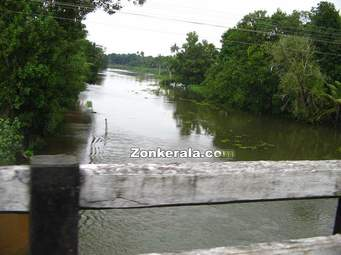
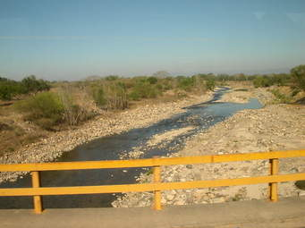
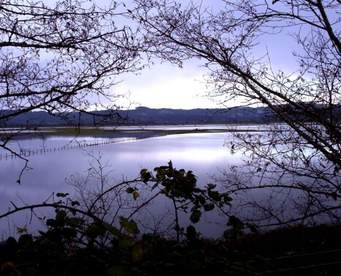

GANGA RIVER

detailed map of GANGA RIVER in Kannauj area
Google Local GANGA RIVER mapWelcome to the GANGA RIVER google satellite map! This beach placemark is situated in Farrukhabad, Uttar Pradesh, India and its geographical coordinates are 27� 7' 0" North, 81� 28' 1" East. Original name (with diacritics) of the place is Kannauj. See GANGA RIVER photos and images from satellite below, explore the aerial photographs of GANGA RIVER in Kannauj area.

The water of East Kali is heavily polluted. It would hopefully change with the NGT taking notice of it.
Rampura, situated in Bulandshahr district in western Uttar Pradesh, is one of the 1,300 villages on the banks of the 300-km long East Kali, a tributary of the Ganges. The river is named after goddess Kali who, according to the Hindu mythology, is fierce and fights evil by ingesting it.
Till the 1980s, the river was a symbol of purity. Things have changed now with the river turning into a nullah brimming with industrial effluents. �We used to drink its waters when young. Today, it's so toxic that forget drinking, I dread touching it,� says Devendra Kumar Sharma, a resident of Panwadi, a village in Meerut district. The rivers toxic water now symbolises death and not life.
